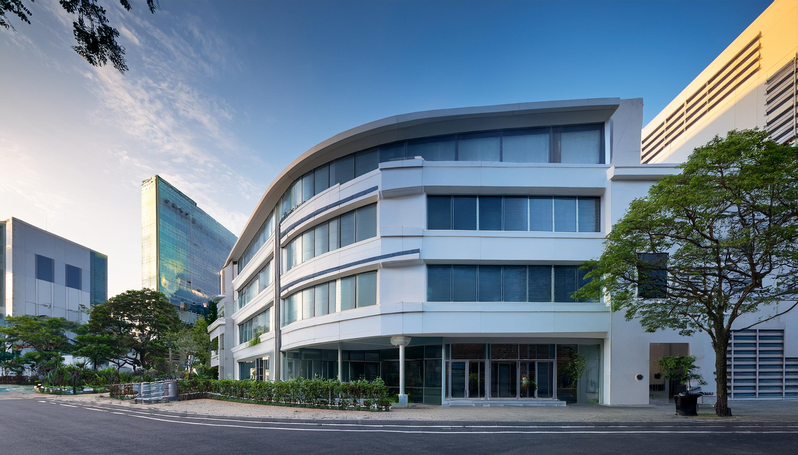

夏季休診のお知らせを掲載しました。

地域に根ざした医療
患者様に寄り添う安心の医療
診療時間
| 診療時間 | 月 | 火 | 水 | 木 | 金 | 土 | 日 |
|---|---|---|---|---|---|---|---|
| 9:00〜12:00 | ● | ● | ● | ／ | ● | ● | ／ |
| 13:00〜18:00 | ● | ● | ● | ／ | ● | ／ | ／ |
受付時間 午前 8:30〜11:30 / 午後 12:30〜17:30
休診日 木曜・日曜・祝日
※診療内容により、受付終了時間が前後する場合があります。


お知らせ


院長あいさつ
こんにちは。佐藤医院のホームページをご覧いただき、ありがとうございます。
当院では、「地域に根ざした医療」を理念に、患者様一人ひとりに寄り添った診療を心がけています。風邪や発熱などの日常的な症状から、生活習慣病の予防・管理まで、地域の皆様が安心して相談できる身近なクリニックを目指しています。
診療では、わかりやすい説明と丁寧な対応を大切にし、患者様の不安を少しでも軽減できるよう努めています。また、必要に応じて専門医療機関と連携し、適切な医療をご提供いたします。
これからも地域の皆様の健康を支えるパートナーとして、スタッフ一同、安心と信頼の医療をお届けしてまいります。どんなことでもお気軽にご相談ください。
佐藤医院 院長 佐藤 太郎
診療案内

一般内科
風邪、発熱、咳、腹痛などの急な症状から、日常的な体調不良まで幅広く診療します。必要に応じて検査や専門機関へのご紹介も行います。

生活習慣病の管理
高血圧、脂質異常症、糖尿病などを継続的にフォローし、食事や運動も含めて無理のない改善をサポートします。

消化器系の診療
胃痛、胃もたれ、胸やけ、便秘、下痢などの消化器系の不調に対応しています。必要に応じて胃カメラや超音波検査などを実施し、胃腸の健康をサポートします。

呼吸器系の診療
咳、息切れ、胸の痛みな診療ど、呼吸器系の症状について診療を行っています。季節性の喘息やアレルギー性鼻炎、慢性閉塞性肺疾患（COPD）などにも対応し、適切な治療と予防をサポートします。
当院について

佐藤医院は、地域の皆様の健康を守り、より良い生活をサポートすることを使命としています。創立以来、私たちは「患者様一人ひとりに寄り添った診療」を大切にし、地域密着型の医療を提供してまいりました。今後も皆様の健康維持と病気予防に貢献するため、より良い医療サービスを提供し続けることをお約束いたします。
スタッフ紹介
地域の皆様に安心してご来院いただけるよう、スタッフ一同、誠心誠意対応いたします。それぞれの専門性と温かさを活かし、皆様の健康を支えるパートナーとしてお力になれるよう努めてまいります。

院長 佐藤 一郎
経歴：光明大学医学部卒業後、瑞穂中央総合病院で内科医として10年間勤務。その後、地域医療への貢献を目指し、佐藤医院を開院。
専門分野：生活習慣病、呼吸器疾患、内科全般
コメント：患者様にとって気軽に相談できる「かかりつけ医」を目指しています。どんな小さな不安でも、まずはご相談ください。

看護師長 山本 花
経歴：白桜大学看護学部卒業後、緑が丘大学病院で10年勤務。地域医療に携わりたい思いから、佐藤医院に入職。
得意分野：親身な対応、注射・採血技術、健康管理指導
メッセージ：安心して治療を受けていただけるよう、いつも笑顔でお待ちしています。些細なことでもお気軽にご相談ください。

臨床検査技師 田中 美咲
経歴：東都臨床検査技術専門学校を卒業後、武蔵中央医療センターにて15年間の臨床検査技師としての経験を積む。
得意分野：血液検査、心電図検査、超音波検査
コメント：検査は不安が伴うこともありますが、できるだけリラックスしていただけるよう、優しく丁寧な対応を心がけています。

受付スタッフ 鈴木 優
経歴：希望医療カレッジ卒業後、さくら診療所にて受付業務を担当。現在は佐藤医院で患者様対応を担当。
得意分野：受付業務、カルテ管理、医療費計算
コメント：皆様に気持ちよくご利用いただけるよう、笑顔と真心を大切にしております。初めての方もどうぞ安心してお越しください。
アクセス

所在地
〒123-4567
東京都台東区上野0-0-0
最寄駅 最寄駅：JR上野駅より徒歩5分
駐車場当院専用の無料駐車場 10台分あり
＊ご来院の際は、交通状況にご注意ください。
最寄駅から徒歩5分の便利な立地です。
お問い合わせ
電話番号：00-0000-0000
FAX：00-0000-0000
メール：info@sato-clinic-test.jp
診療時間
| 診療時間 | 月 | 火 | 水 | 木 | 金 | 土 | 日 |
|---|---|---|---|---|---|---|---|
| 9:00〜12:00 | ● | ● | ● | ／ | ● | ● | ／ |
| 13:00〜18:00 | ● | ● | ● | ／ | ● | ／ | ／ |
受付時間 午前 8:30〜11:30 / 午後 12:30〜17:30
休診日 木曜・日曜・祝日
※診療内容により、受付終了時間が前後する場合があります。
診療時間
内科
循環器科
呼吸器内科
予防接種・健康診断
生活習慣病（高血圧・脂質異常症・糖尿病等）の管理
そのほかご不明な点があれば電話またはメールでお気軽にご相談ください。